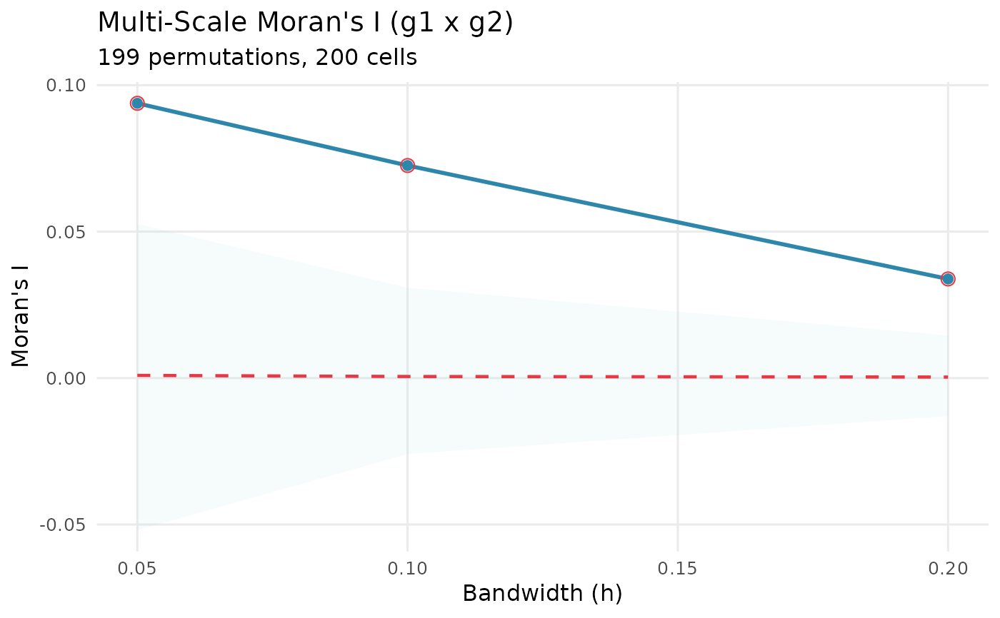
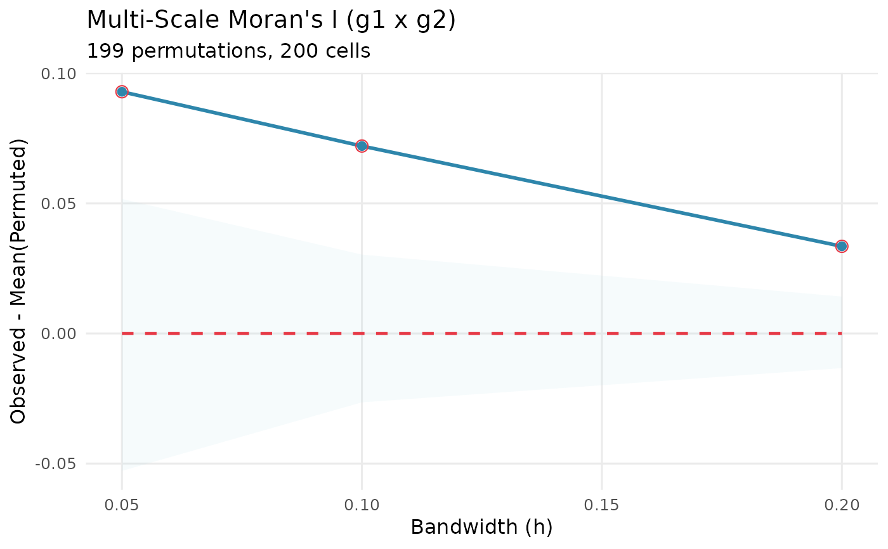
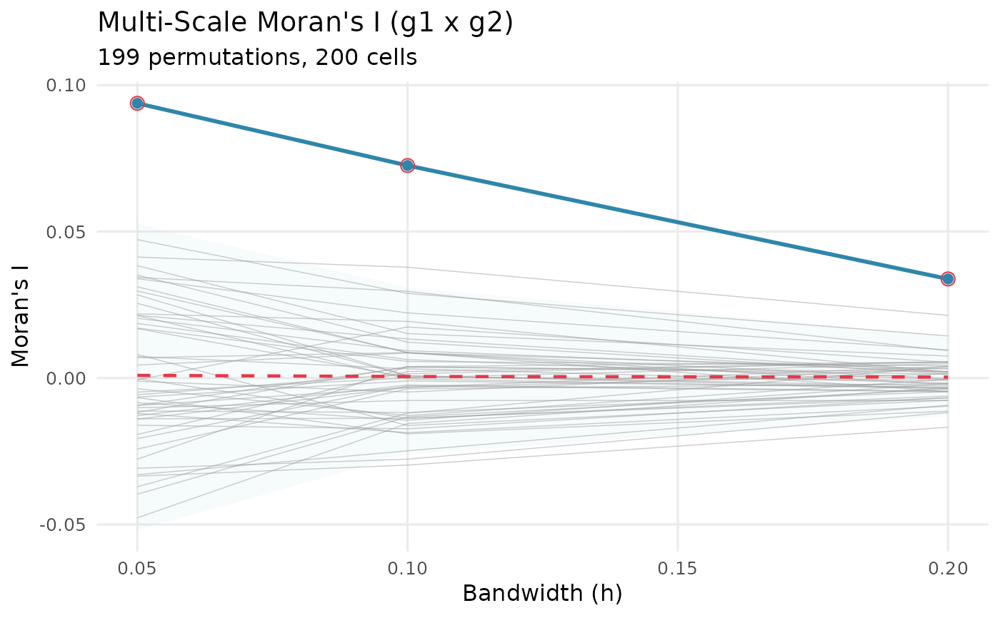

Creates ggplot2 visualization of Moran's I across bandwidths with permutation-based confidence bands.
plot_scale_curve(
result,
type = "observed",
show_permutations = FALSE,
show_permutations_n = 100,
ribbon_alpha = 0.1,
point_size = 2,
line_width = 1,
colors = NULL
)Object of class kernelcomm_result (must have significance computed)
Character. One of:
"observed": observed Moran's I with the null envelope (default)
"difference": observed minus the permutation mean
"zscore": deviation standardised by the permutation standard deviation
Logical. Draw individual permutation curves behind the observed one (default FALSE). This is the most direct way to judge whether the observed curve is unusual.
Integer, how many permutation curves to draw when
show_permutations = TRUE (default 100). Drawing all of them is slow and
illegible for large perms.
Numeric transparency of the envelope (default 0.1). Named to avoid confusion with the significance threshold, which this is not.
Size of points (default: 2)
Width of lines (default: 1)
Named list with colors: list(line = "...", ribbon = "...", null = "...")
ggplot2::ggplot object
The shaded band is the null envelope: quantiles of the permutation
distribution, showing where the statistic would fall under complete spatial
randomness. It is not a confidence interval for the observed curve. Its width is
set by envelope_level in compute_significance, not here.
set.seed(1)
n <- 200
coords <- matrix(runif(2 * n), ncol = 2)
g1 <- rnorm(n)
sm <- exp(-as.matrix(dist(coords))^2 / (2 * 0.1^2))
g2 <- as.vector(sm %*% g1) / rowSums(sm) + rnorm(n, sd = 0.5)
res <- multiScaleAC(coords, g1, g2, h = c(0.05, 0.1, 0.2), perms = 199)
res <- compute_significance(res)
plot_scale_curve(res)

plot_scale_curve(res, type = "difference")

plot_scale_curve(res, show_permutations = TRUE, show_permutations_n = 50)
